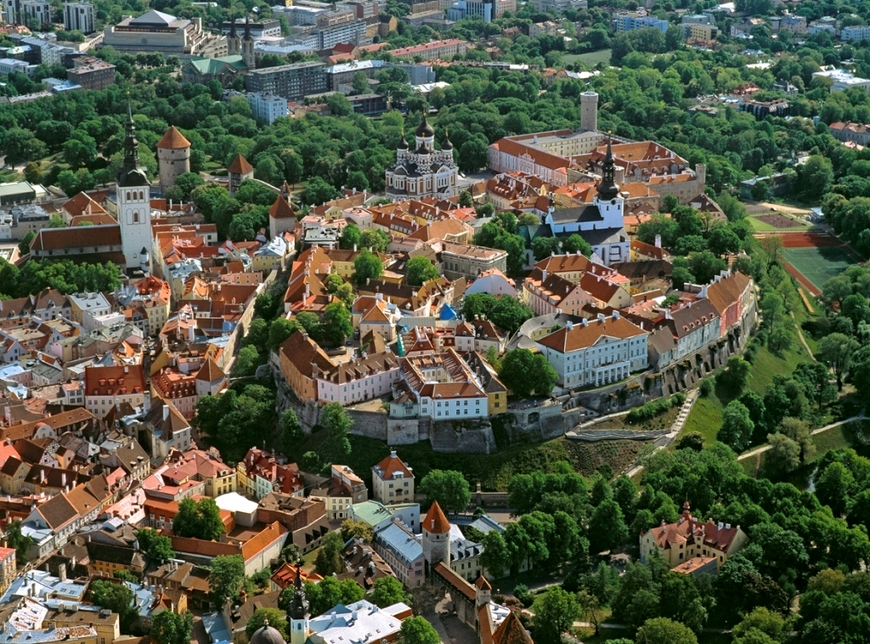
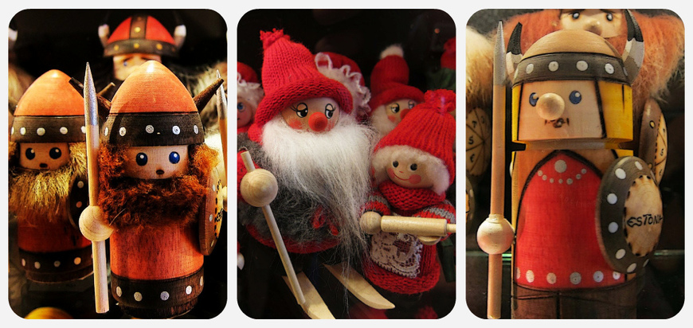

Поездка в Таллин
За свою тысячелетнюю историю Таллин побывал во власти датчан, немцев, шведов и русских и в результате сформировал совершенно особенный облик, в котором военная строгость сочетается с крестьянской простотой, история — с современностью.
Средневековые крепостные стены напоминают о временах, когда за город шли постоянные бои, а домашняя кухня в ресторанах — о бабушкином гостеприимстве. Здесь по старинным мостовым можно попасть в музей современного искусства, после прогулок по дворцам российских императоров пройтись по модным магазинам, покормить в парке белок и отобедать в стильном ресторане. Поездка в Таллин — перекресток культур и эпох — не оставит равнодушным никого. Его Старый город, кстати, внесён в список мирового наследия ЮНЕСКО.
Как добраться до Таллина?
Жителям Санкт-Петербурга и соседних регионов повезло: они могут доехать до Таллина на автобусе, причем совсем недорого и довольно быстро. Более десяти комфортабельных автобусов в день уходят с петербургских автовокзалов, доставляя своих пассажиров до столицы Эстонии всего за 6-7 часов. Около семи часов идет и поезд «Санкт-Петербург – Таллин». А вот прямым рейсом Аэрофлота или Эстонских авиалиний можно добраться всего за 55 минут.

Из Москвы всё же удобней лететь самолетом, тем более что прямой рейс Аэрофлот или Estonian Air займет всего полтора часа. С одной пересадкой до Таллина летают Finnair, airBaltic и другие авиакомпании. Предпочитаете поезда? Отправляйтесь на Ленинградский вокзал: вечером садитесь в российской столице, ранним утром выходите в эстонской. Можно поехать и на автобусе, вот только в пути придется провести от 12 часов. Впрочем, такой вариант довольно популярен у желающих немного сэкономить на транспортных расходах.
Из Украины в Эстонию удобнее всего добираться на самолете. Прямой рейс Estonian Air из Киева в Таллин займет менее двух часов. С пересадками летают airBaltic, Аэрофлот и LOT.
Самые дешевые авиабилеты в Таллин можно найти на Aviasales.ru. На этом сайте в режиме реального времени вы увидите десятки предложений различных авиакомпаний и агентств, с помощью фильтров легко выбрав те, что подойдут вам по цене, датам и времени вылета. О том, как использовать этот сервис с максимальной выгодой, читайте в обзоре Ever.Travel.
Где остановиться в Таллине?
Таллин – довольно небольшой, если сравнивать с другими европейскими столицами. Ещё меньше его исторический центр – Старый город, компактно расположенный на небольшом пятачке, буквально километр на полтора. Как раз здесь находятся все основные достопримечательности Таллина.
Удивительно, но факт: в центре города можно найти как элитные отели, так и довольно бюджетные хостелы. Так что даже не раздумывайте, селитесь прямо в центре, чтобы не тратить лишнего времени и денег на дорогу.
Старый город
Историческое сердце Таллина, район Ванналин, входит в списки всемирного наследия ЮНЕСКО и охраняется государством. Это значит, что владельцам запрещено радикально менять внешний и внутренний облик зданий. Потому вы можете остановиться в настоящей средневековой гостинице, где в коридорах стоят рыцарские латы, а комнаты оформлены в рустикальном стиле, по которому полагается много камня и дерева. Некоторые здания еще в XVI–XVII веках были постоялыми дворами, а их рестораны до сих пор подают простые и сытные блюда национальной кухни.
Если вы едете в Таллин в «высокий сезон» – летом и с декабря по январь, то о бронировании жилья лучше побеспокоиться заранее. Для этих целей отлично подходит сайт Booking.com, где собраны самые разные предложения – от хостелов и апартаментов до лучших отелей и гостиниц. С помощью этого сервиса вы можете мгновенно проверить, свободен ли интересующий вас номер на нужные даты, посмотреть его фото и почитать отзывы гостей, которые уже останавливались в нем. Подробнее о том, как забронировать отель на Booking.com читайте в нашем обзоре.
Виза в Эстонию
Самостоятельная процедура получения эстонской визы мало чем отличается от оформления виз других стран-участниц Шенгенского соглашения. Но консульский сбор и список необходимых документов периодически меняются, поэтому мы советуем уточнять актуальную информацию на официальном сайте Визового центра Эстонии в России. Граждане Украины могут обратиться в Консульскую службу посольства Эстонии в Киеве.
Транспорт в Таллине
Как добраться от аэропорта Таллина до города
Аэропорт им. Леннарта Мери (эст. Lennart Meri Tallinna lennujaam, также Ülemiste lennujaam) расположен буквально в 4 км от центра Таллина. Самый удобный способ добраться до города – это автобус №90 с надписью Airport-City Centre на боку. Его маршрут проходит мимо большинства популярных отелей.
Если вы в Таллине проездом, то лучше сесть на автобус №2. Он идет через автовокзал, Старый город и пассажирский морской порт, т.е. практически все места возможных пересадок. Оба рейса отправляются каждые полчаса, стоимость проезда составляет 2-3 евро, билет можно купить прямо у водителя.
Так как аэропорт находится практически в черте города, доехать до центра Таллина можно всего за 20 минут. Но как найти выбранный вами отель среди переплетений узких улочек? Самый надежный способ быстро и с комфортом добраться до места назначения – это трансфер от KiwiTaxi. Благодаря этому сервису вы можете, ещё находясь дома, заказать такси, точно знать, сколько оно будет стоить, и что вас обязательно встретят в аэропорту.
Аренда авто в Таллине
Тем, кто собирается не только погулять по Таллину, но и съездить в Тарту или Пярну, лучше всего взять машину напрокат, чтобы не зависеть от городского и пригородного транспорта. Отличный выбор автомобилей от разных агентств можно найти на сайте RentalCars.com. Система рейтинга и отзывов поможет вам легко сориентироваться, а мы подскажем, как найти на RentalCars.com лучшие предложения!
Городской транспорт Таллина
В Таллине есть трамваи и троллейбусы, но основным общественным транспортом являются автобусы. Они ходят с 6:00 до 23:00 почти по 70 маршрутам. Билеты можно купить у водителя (1,6 евро) или в киоске (1,1 евро). Там же можно приобрести проездные на неограниченное число поездок на 24 часа (3 евро), 72 часа (5 евро) и 150 часов (6 евро). Школьникам и студентам, имеющим карту ISIC, полагается скидка 50%.
Такси в Таллине довольно доступное. Единого тарифа нет, но на правой задней двери каждой машины должен быть вывешен прейскурант. Ориентировочная стоимость посадки — 2-5 евро, каждого километра — 0,5 (днем) — 1 евро (ночью). Также в центре приборной панели должна находиться белая пластиковая карточка с фотографией и именем водителя.
Туристическая карта Tallinn Card
Tallinn Card обеспечивает бесплатный вход в 40 музеев, проезд на общественном транспорте, обзорную экскурсию и даже посещение ночного клуба, а также предоставляет скидки в аквапарке, магазинах, кафе и ресторанах. Стоимость карты на 24 часа — 29 евро, на 48 часов — 43 евро, на 72 часа — 52 евро, детям до 14 лет — вдвое дешевле. Обратите внимание, что по понедельникам и вторникам многие таллиннские музеи закрыты.
Экскурсии по Таллину
Понять, что посмотреть в Таллине – легко, используя интерактивную карту достопримечательностей. Просто отметьте на ней места, которые вам хотелось бы увидеть, распределите их по нескольким дням поездки и выстройте в готовые маршруты для прогулок. Затем скачайте бесплатное мобильное приложение Ever.Travel и авторизуйтесь в нем под тем же аккаунтом, что и на сайте. И вуаля, ваши планы синхронизируются между web-версией и смартфоном! Подробнее о том, как это работает, читайте в нашем обзоре.
Тем, кто хочет получить готовые решения, советуем изучить наши путеводители по Таллину:
- Самостоятельная экскурсия по центру Таллина
- Путеводитель по Таллину
- Вышгород
- Улица Лай
- Необычные достопримечательности Таллина
- Новый год в Таллине
Можно бесконечно долго гулять по столице Эстонии, наслаждаясь её видами, но иногда хочется, чтобы кто-то рассказал обо всех городских секретах и тайнах вживую. Как раз для таких случаев предназначена Excursiopedia. Это сайт, где собраны лучшие предложения профессиональных гидов по Таллину. Вот лишь несколько примеров:
- Прогулка с рыцарем – начните своё путешествие по Таллину вместе с суровым и брутальным, но в то же время крайне дружелюбным рыцарем, который проведёт вас по местам, некогда бывшими ареной сражений. Вы сможете посмотреть средневековую амуницию и оружие, посетить крепостные стены, хранящие страшные тайны, и сфотографироваться с настоящим латником.
- Сказочная экскурсия для детей – не только малыши, но и взрослые с удовольствием узнают многочисленные легенды Таллина. Что может быть прекраснее марципановой галереи, где вы сможете собственноручно вылепить сладкую фигурку и привезти её домой как сувенир. Или сразу же съесть её :)
- Фотосессия в Старом Таллине – великолепный шанс посетить достопримечательности эстонской столицы в сопровождении профессионального фотографа и визажиста. Вы сможете увезти домой не просто воспоминания, но и чудесный фотоальбом.
Шопинг в Таллине
Главная торговая улица Таллина — Виру (Viru): здесь есть и магазины известных европейских марок, и бутики эстонских дизайнеров, и, конечно, множество сувенирных лавочек. Большой выбор авторских работ из кожи, стекла, керамики, дерева, камня и металла. Невозможно не приобрести яркие вязаные предметы: свитера, носки, шарфы, варежки. Обратите внимание также на изделия из льна и можжевеловую посуду.
Время работы магазинов — с 9:00 до 18:00 (некоторые до 20:00) по будням и с 9:00 до 15:00 (некоторые до 18:00) по субботам. В Старом городе можно совершить покупки и в воскресенье. Супермаркеты и крупные торговые центры обычно работают без выходных с 10:00 до 20:00-21:00.
Эстонская кухня
Основа эстонской кухни — простые блюда из качественных продуктов, доступных в северном климате: картофеля, круп, молока, мяса, рыбы. В ходу холодные закуски: маринованная килька, копченая салака, селедка со сметаной и картофелем, бекон, ветчина, сюльт (студень) с хлебом.
Хлеба, кстати, в Эстонии десятки сортов — серый (сеппик), ржаной, ячменный, кисло-сладкий, медовый, картофельный. На Рождество пекут пипаркоок — традиционное праздничное печенье с пряностями.
Обязательно попробуйте национальные горячие блюда: картулипорс — «картофельных поросят», запеченную в картофельном пюре свинину, мульгикапсад — свинину, тушеную с кислой капустой и перловкой, или мульгипудер — картофельное пюре с перловой кашей. Согреться после долгих прогулок поможет знаменитый ликер на травах “Vana Tallinn”.
Важно знать:
- Государственный язык — эстонский
- Площадь города — 160 кв.км. Делится на 8 районов. Самый интересный для посещения — Кесклинн (Kesklinn, буквально — «центр города»), в котором находится большая часть достопримечательностей.
- Население около 430 тыс. чел., из которых эстонцы — 52,5% и русские — 38,5%.
- Виза — шенген, стоимость 35 евро.
- Валюта — евро.
- Климат: Из-за близости к морю погода в Таллине может резко меняться. Зима в целом холодная, весна дождливая. Лето теплое, но не жаркое. Осень мягкая, хорошая погода держится почти до начала ноября.
Праздники и нерабочие дни:
- — 1 января — Новый год
- — 24 февраля — День независимости Эстонии
- — Страстная пятница и Пасха
- — 1 мая — Праздник весны
- — Троица
- — 23 июня — Праздник Победы
- — 24 июня — Янов день (Праздник летнего солнцестояния)
- — 20 августа — День восстановления независимости
- — 24 декабря — Сочельник
- — 25 декабря — Рождество
- — 26 декабря — День подарков. Святки.
В обзоре использованы фото Shutterstock, Booking.com, Flickr: U. Heinze, sloopjonb 1, Miss Mandarina, Tikiman n Tikimum, www.tourism.tallinn.ee, TOTORORO.RORO.
К началу статьи